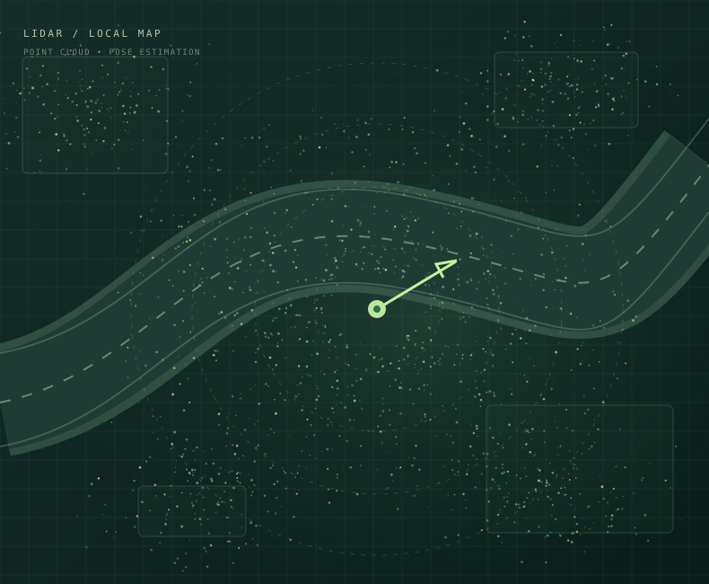

01 / FEATURED RESEARCH ONGOING
AUTONOMOUS SYSTEMS / LOCALIZATION
Giving a golf cart
a sense of place.
Researching multi-sensor localization for an autonomous campus vehicle. Benchmarking LiDAR, camera, and inertial SLAM pipelines, building 3D maps, and studying when and why localization fails.

MAP / ODOM / BASE_LINKRESEARCH VISUAL / 01